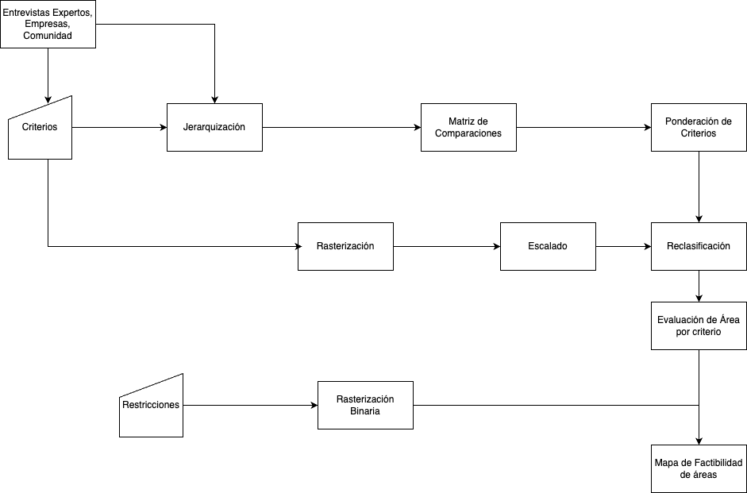

8 Diseño de Solución
8.1 Esquema General:
A continuación se presenta un esquema preliminar de aplicación de un sistema de análisis multicriterio territorial (Figure 8.1).

8.2 Etapas:
- Entrevistas:
- Corresponde al proceso donde se obtiene la opinión, argumentos y experiencia de de los Expertos en la temática; empresas desde técnica y a la comunidad. Lo anterifor, detallado en la Chapter 2.
- Criterios:
- Definción de los criterios de evaluación para los proyectos de generación de energía eléctrica.
- Matriz de Comparaciones:
- Configuración de una matriz de comparación cuya valoración conrresponde a las ponderaciones de todos los criterios con todos, bajo la escala consignados en Table 6.1 de Saaty (1980).
- Pnderacion de los criterios w:
- Calcular los autovalores de la matriz de comparación, que se definirán como pesos (w) por cada uno de los criterios, cuya suma es igual a 1.
Rasterización: :Completar…
- Escalado:
- Completar…
- Reclasificacion:
- Completar…
- Evaluación de Área por Criterio:
- Completar…
- Rasterización Binaria:
-
- Restricciones de contrucción
- Mapa de Factibilidad de áreas:
- Completar…